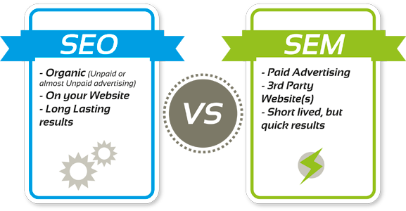
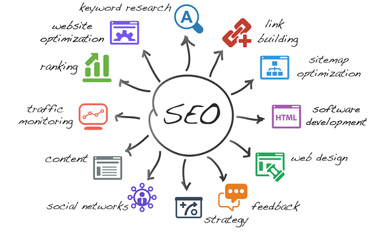

What is the difference between SEO and SEM?

The terms SEO and SEM are every now and again utilized – and once in a while conversely – with regards to methodologies for achieving clients on web crawlers. But they don’t mean the same thing.
Search Engine Optimization (seo) means using a prescribed set of best practices that help search engine crawlers understand exactly what it is that your business offers. This, in turn, allows search engines to show your content to people who are seeking your products or services. While Search Engine Marketing (SEM) is an umbrella term that encompasses the full set of tactics that can grow your visibility on search engine results pages.
SEO Strategies

- Domain name strategy
- Linking strategy
- Keyword strategy
- Title tags Strategy
- Meta description tags strategy
- Alt tags strategy
- Search Engine Indexing strategy
The motivation behind an area name methodology is to proactively secure your image online by decreasing the possibility for others to utilize your image name in their online exercises, particularly, in their site URLs. For instance, Nike claims Nike.com. Envision if another organization started offering sportswear at Nikes.com or Nike.biz. There could surely be perplexity among guests to those locales.
Likewise with any advertising action, the initial phase in any third party referencing effort is the production of objectives and systems. Tragically, external link establishment is a standout amongst the most troublesome exercises to quantify.
Utilizing Catchphrases in Your Crusades. Watchword Methodologies are fundamental to creating winning web index showcasing efforts. ... The best catchphrase systems depend on exceptionally applicable watchwords, which are catchphrases that relate nearly to your business or are related with your industry.
A title tag is a HTML component that determines the title of a site page. Title labels are shown on internet searcher comes about pages (SERPs) as the interactive feature for a given outcome, and are vital for ease of use, Website optimization, and social sharing.
Meta Depiction Magic: Ponder Website design enhancement and More about Snap Throughs. The meta depiction tag in HTML is the 160 character bit used to outline a website page's substance. Web crawlers now and again utilize these scraps in list items to tell guests what a page is about before they tap on it.
An alt tag, otherwise called "alt property" and "alt depiction," is a HTML ascribe connected to picture labels to give a content contrasting option to web indexes. Applying pictures to alt labels, for example, item photographs can emphatically affect an online business store's web index rankings.
Search engine indexing is the procedure of a web crawler gathering, parses and stores information for use by the web search tool. The real web search tool list is where every one of the information the web crawler has gathered is put away. It is the internet searcher record that gives the outcomes to look questions, and pages that are put away inside the web search tool file that show up on the web index comes about page. Without a web crawler file, the web crawler would take significant measures of time and exertion each time an inquiry question was started, as the web search tool would need to look not just every site page or bit of information that needs to do with the specific catchphrase utilized as a part of the hunt inquiry, however every other snippet of data it approaches, to guarantee that it is not missing something that has something to do with the specific watchword. Internet searcher arachnids, additionally called web index crawlers, are the means by which the web search tool record gets its data, and staying up with the latest and free of spam.
Is it possibe to combine strategies? If yes, which strategies would you like to implement? Why?

Yes, these are the Search Engine Indexing Strategy and Keyword Strategy. This is to figure out which keywords the customer use to find a product or service. This enables site search on a website, and analyzing the terms that are frequently used tht can give a valuable insight into a customer's needs and search habits.